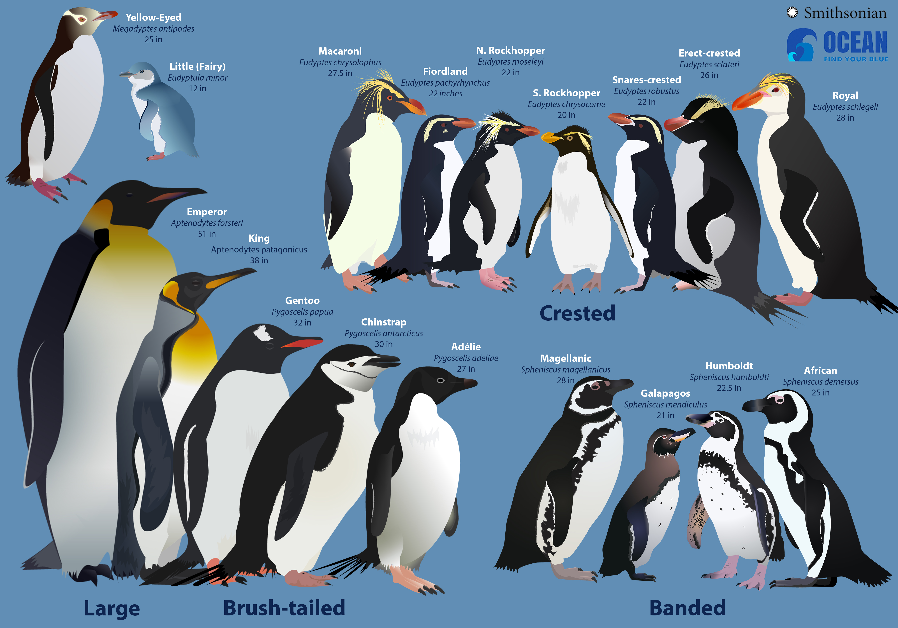
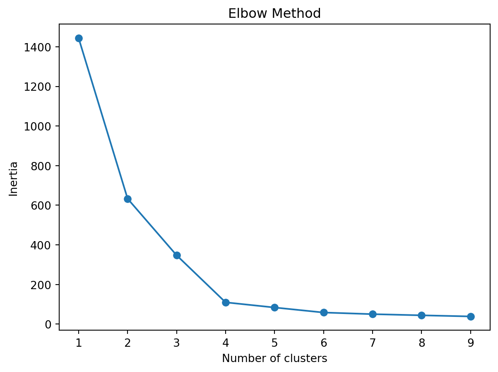
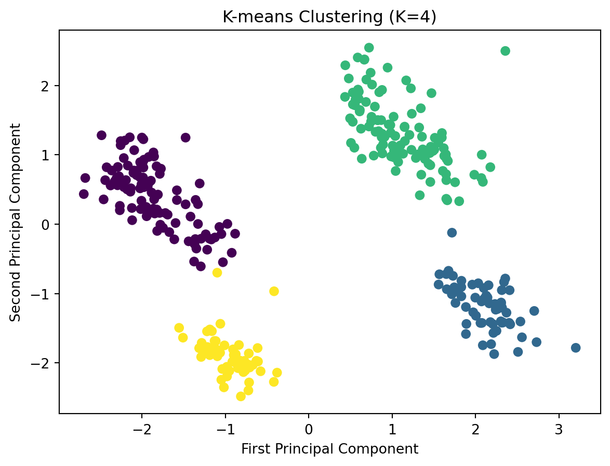

Clustering Penguins with KMeans: An Insightful Approach
code
analysis
Author
Xiaoying Yang
Published
November 26, 2023

Facts about Penguin Species
Penguins are a family of 17 to 19 species of birds that live primarily in the Southern Hemisphere. They include the tiny blue penguins of Australia and New Zealand, the majestic emperor penguins of Antarctica and king penguins found on many sub- Antarctic islands, the endangered African penguin and the Galápagos penguin—the only penguin to be found north of the equator. Identifying penguin species can be both a fun and educational experience. Size, shape, plumage, color, beak size, beak color, and behavioral traits etc are key factors to consider when trying to differentiate between various penguin species. Therefore, identify penguins can be a difficult task.
Intro of Clustering and KMeans
Clustering, an unsupervised learning method, groups samples in a dataset into various clusters based on similarity criteria. This method focuses on the intrinsic characteristics of the data itself, rather than relying on pre-labeled categories. The key advantage of clustering lies in its ability to uncover meaningful patterns and the intrinsic structure within the data, all without the need for explicit instructions. In this blog post, we demonstrate the process of applying KMeans clustering by classifying penguins species, providing a practical illustration of how KMeans can effectively discern and group data based on its inherent traits.
KMeans is a distance-based clustering algorithm that treats data points that are relatively close together as similar and groups them together. The process of KMeans is as follows:
(1) Randomly find k points as the center of mass (seed);
(2) Calculate the distance from other points to the k seeds, and choose the closest one as the category of the point;
(3) Update the center of mass of each category, iterate until the center of mass is unchanged.
Step 0: Load & Preprocess data
import numpy as npimport pandas as pdimport osos.environ['OMP_NUM_THREADS'] ='2'from sklearn.decomposition import PCAfrom sklearn.cluster import KMeansfrom sklearn.preprocessing import StandardScalerimport matplotlib.pyplot as pltfrom sklearn.metrics import silhouette_scoreimport warningswarnings.filterwarnings("ignore", category=FutureWarning)## Step 1: Load and preprocess data# load data, preprocess data where dealing with missing values, outliersdata = pd.read_csv('https://raw.githubusercontent.com/xiaoyingyang96/xiaoyingyang96.github.io/main/Data/penguins.csv')#data = pd.read_csv('D:\\Courses\\2023 Fall\\CS 5805 Machine Learning\\clustering\\penguins.csv')#Missing valuesprint(data.sex.unique())
['MALE' 'FEMALE' nan '.']
In terms of the result above, the sex attribute contains missing and erroneous data, it is necessary to remove them. And in the outlier detection, let us consider the boxplot diagram. This diagram shows the statistics of the sampled data, the distribution of elements.
From the boxplot it is easy to detect that there are outliers (circles) in the column flipper_length_mm (flipper length). Thus, we need to remove these data so that they do not affect the performance of the model.
We will perform feature scaling and data dimensionality reduction using PCA (Principal Component Analysis). Data dimensionality reduction is the process of reducing the number of features (variables) in a dataset while preserving the most important characteristics of the information. PCA extracts the most important principal components from multidimensional data by projecting them onto a new feature space. Each principal component is a combination of the original features that describes the greatest amount of variability in the data. The scaled feature value are shown in the following table.
Step 2: Choose the Number of Clusters(K) by Elbow method
An appropriate K value is a key to conduct KMeans for clustering. The elbow method provides a way to balance the number of clusters and the quality of clusters.
In the context of K-means clustering, the Elbow Method graph serves as a specific type of model performance curve, depicting how inertia values change with different numbers of clusters (K values). Inertia, defined as the sum of the distances between data points and their nearest cluster center, is a key metric for assessing the quality of clustering. Lower inertia values indicate that data points are closer to their cluster centers, typically suggesting better clustering outcomes.
In K-means clustering, as the number of clusters increases, each data point is more likely to be closer to its cluster center, thereby reducing the inertia. However, beyond a certain point, adding more clusters does not significantly improve the quality of clustering, and the rate of decrease in inertia slows down. This slowing point, akin to the bending of an elbow, is the namesake of the Elbow Method. It marks the balance point between the number of clusters and the quality of clustering, hence is often considered the criterion for selecting the optimal number of clusters.
Applying elbow method in the model performance curve, we pick K = 4 as appropriate number of clusters.
inertia = []for k inrange(1, 10): kmeans = KMeans(n_clusters=k, random_state=42).fit(penguins_PCA) inertia.append(kmeans.inertia_)plt.clf()plt.plot(range(1, 10), inertia, marker="o")plt.xlabel("Number of clusters")plt.ylabel("Inertia")plt.title("Elbow Method")plt.show()

Step 3: Create and Fit the KMeans Model
Instantiate the KMeans class and fit to the data. Then, we retrieve the cluster centroids (the mean of the points in each cluster) and the labels (which point belongs to which cluster).
n_clusters =4kmeans = KMeans(n_clusters=n_clusters, random_state=42).fit(penguins_PCA)plt.clf()plt.scatter(penguins_PCA[:, 0], penguins_PCA[:, 1], c=kmeans.labels_, cmap="viridis")plt.xlabel("First Principal Component")plt.ylabel("Second Principal Component")plt.title(f"K-means Clustering (K={n_clusters})")plt.show()

In the clustering diagram, the four clusters are distinctly separated, each denoted by a unique color, indicating the K-means algorithm’s effectiveness in grouping data points according to their mutual similarities. The purple cluster in the bottom left and the yellow cluster in the top right appear more dense, suggesting a higher degree of similarity among their respective data points. In contrast, the green cluster on the middle right and the blue cluster on the middle left are more dispersed, hinting at greater variation within those clusters. There are no apparent outliers, as no data points are significantly distant from their cluster’s core, implying a relatively uniform data distribution. The demarcations between clusters, particularly between the purple and yellow ones, are quite pronounced. However, the boundary between the blue and green clusters is somewhat blurred, which may reflect a degree of overlap in the characteristics of these clusters’ data points.
Step 4: Evaluate the clustering performance
#Calculation of the silhouette coefficientsilhouette_avg = silhouette_score(penguins_PCA, kmeans.labels_)print(f'Silhouette Score: {silhouette_avg:.2f}')
Silhouette Score: 0.72
Silhouette coefficient are calculated to evaluate the clustering model. As a measure of how similar an object is to its own cluster, a silhouette score of 0.72 in this study indicates a good cluster structure. The score suggests that each data point is much closer to the members of its own cluster than to the members of other clusters. Also, it has strong separation and cohesion and reliable clustering results. Also, it is important to consider other factors and domain-specific knowledge when evaluating the effective of a clustering model.
In summary, clustering results may be useful for understanding different groups of characteristics in penguin populations. For example, different clusters may represent different species of penguins, or penguins may be grouped according to their biometric characteristics (e.g., bill length, bill depth, flipper length, and weight). These clustering results can be used to further investigate the specific attributes of the penguins in each cluster, providing a basis for understanding the ecological and behavioral patterns of penguin populations.